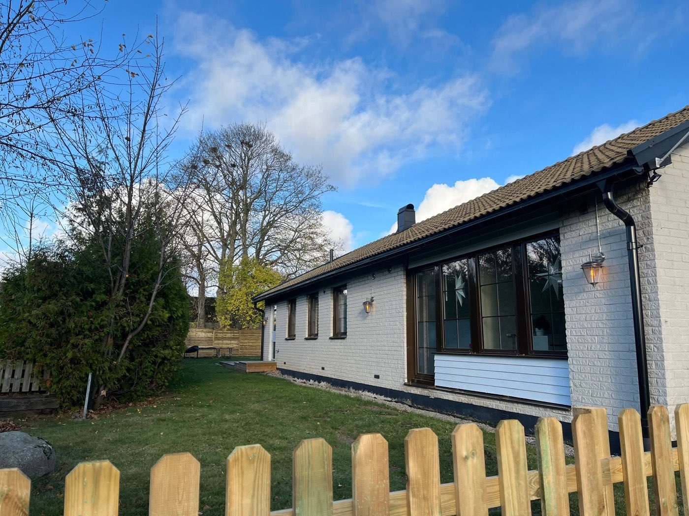

Vinkelvikens HVB
Hörby, Skåne
0 av – platser
Till enheten →
HVB-hem för ungdomar 13–17 år
Noav AB driver HVB-hem för ungdomar i Hörby och Olofström. Vi arbetar lågaffektivt och kravanpassat, med hög personaltäthet, tydlig struktur och evidensbaserade metoder — alltid utifrån socialtjänstens uppdrag.
0 lediga platser just nu — båda enheterna
Just nu
Aktuell tillgänglighet på våra två enheter. Ring oss gärna direkt vid en placeringsförfrågan — vi hjälper till att bedöma om vi är rätt insats för ungdomen.
Hörby, Skåne
0 av – platser
Till enheten →
Olofströms kommun, Blekinge
0 av – platser
Till enheten →
Våra enheter
Båda enheterna arbetar utifrån samma metodik och kvalitetsledningssystem, med små hemlika miljöer och nära till naturen.

– lediga platserHörby, Skåne
Ett hemlikt HVB med sju platser, psykolog knuten till verksamheten och en aktiv vardag med skola, friluftsliv och ridning. Här bor ungdomarna i en lugn miljö med tydliga rutiner och vuxna som alltid finns nära.
Olofströms kommun, Blekinge
Vår enhet i Blekinge tar emot ungdomar med samma målgrupp och metodik som Vinkelviken, i en naturnära miljö mitt i skogsbygden. Enhetssidan byggs ut i takt med att verksamheten etableras.
Behandling
Vår metodik bygger på att trygghet och goda relationer kommer först — det är då förändring blir möjlig. Arbetet är KBT-inriktat och vilar på evidensbaserade metoder.
Vi möter varje ungdom med lugn och anpassar kraven efter dagsform och förmåga. Konflikter trappas ner — inte upp.
Tydliga rutiner, kända förväntningar och en vardag som ser likadan ut från dag till dag skapar den trygghet förändring kräver.
Behandlingen utgår från kognitiv beteendeterapi med metoder som rePulse/reManga och ART, anpassade efter varje ungdoms behov.
Ungdomarna tränar sociala färdigheter, impulskontroll och vardagskompetens — både enskilt och i grupp.
Det finns alltid vuxna nära till hands. Vårt team har lång erfarenhet av svår beteendeproblematik samt neuropsykiatriska och psykiatriska svårigheter.
Alla ungdomar har skolgång eller annan daglig sysselsättning. Vi stöttar med läxhjälp och håller tät kontakt med skolan.
Målgrupp
Vi tar emot flickor och pojkar i åldern 13–17 år vars hälsa och utveckling riskerar att skadas allvarligt. Många av ungdomarna har vistats i olämpliga miljöer och bär med sig erfarenheter som gör det svårt att lita på vuxna.
Det kan handla om svårigheter i det sociala samspelet, i relationer till familj och jämnåriga, eller en skolgång som inte fungerat. Vår personal har lång erfarenhet av att arbeta med svår beteendeproblematik, neuropsykiatriska funktionsnedsättningar och psykiatriska tillstånd.
Varje placering börjar med socialtjänstens uppdrag. Utifrån det formar vi en individuell planering — och är alltid ärliga i bedömningen av om vi är rätt insats för just den här ungdomen.
För att kunna hålla en trygg och drogfri miljö för alla som bor hos oss tar vi inte emot ungdomar med ett aktivt missbruk eller en pågående kriminalitet. Vid osäkerhet — ring oss, så resonerar vi tillsammans om lämplig insats.
Kvalitet & trygghet
Trygg vård kräver en trygg organisation. Vårt kvalitetsarbete är systematiskt och följer Socialstyrelsens föreskrifter.
Vi arbetar enligt SOSFS 2011:9 med löpande uppföljning, utvärdering, avvikelsehantering och egenkontroll — så att kvaliteten kan visas, inte bara utlovas.
Noav AB har kollektivavtal via Vårdföretagarna. Schyssta villkor ger en stabil personalgrupp — och stabila vuxna är grunden i vår behandling.
Vi arbetar löpande och förebyggande med personalens arbetsmiljö. En trygg och frisk personalgrupp märks i ungdomarnas vardag.
Platsförfrågan
Ring oss så berättar vi om aktuell tillgänglighet, svarar på frågor om målgrupp och metodik och resonerar öppet om vi är rätt insats. Vi återkopplar skyndsamt på alla förfrågningar från socialtjänsten.
Verksamhetschef
[Namn kompletteras]
[Platshållare: nummer kompletteras] [Platshållare: e-post kompletteras]Vinkelvikens HVB — Hörby
Enhetstelefon
[Platshållare: nummer kompletteras] [Platshållare: e-post kompletteras]Kyrkhults HVB — Olofström
Enhetstelefon
Via verksamhetschef [Platshållare: direktnummer kompletteras]